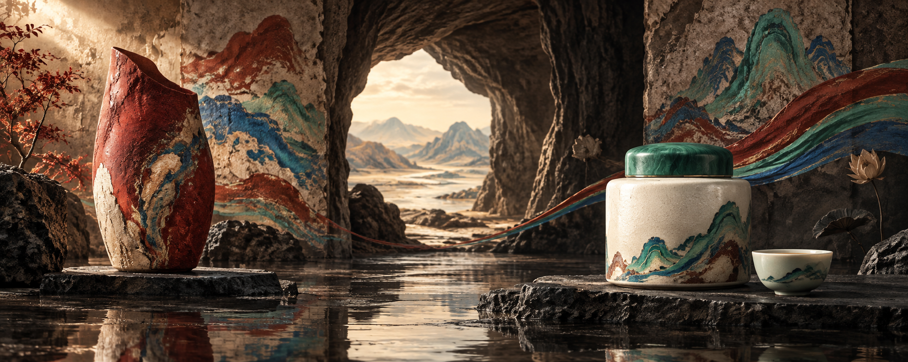
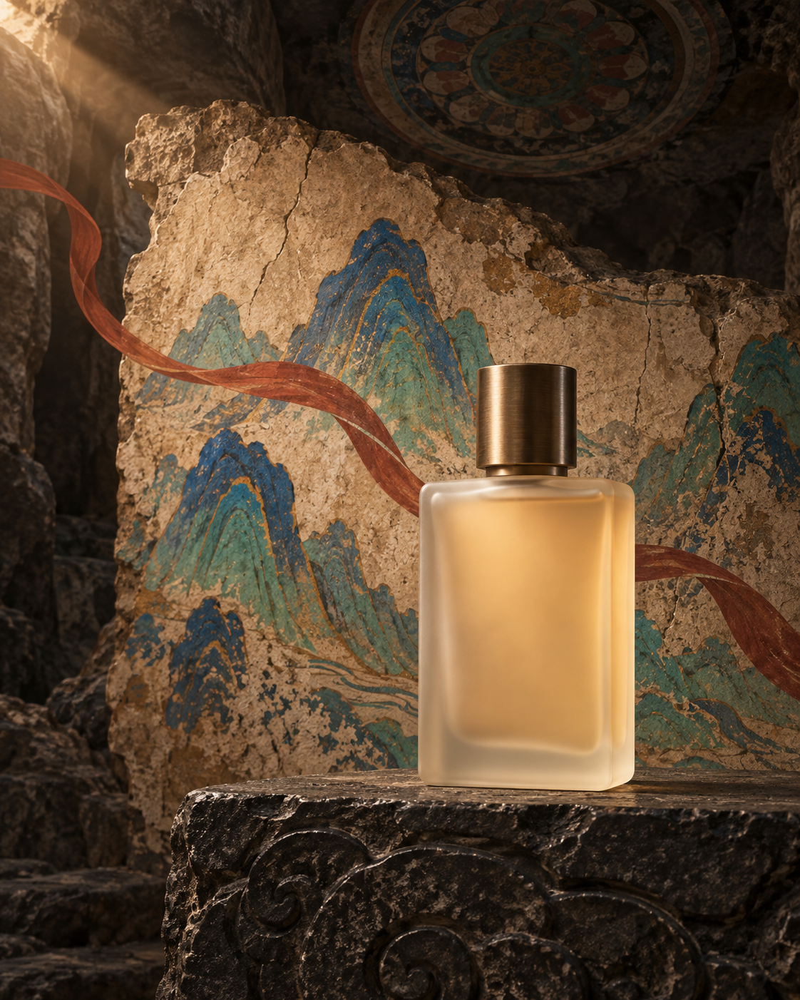
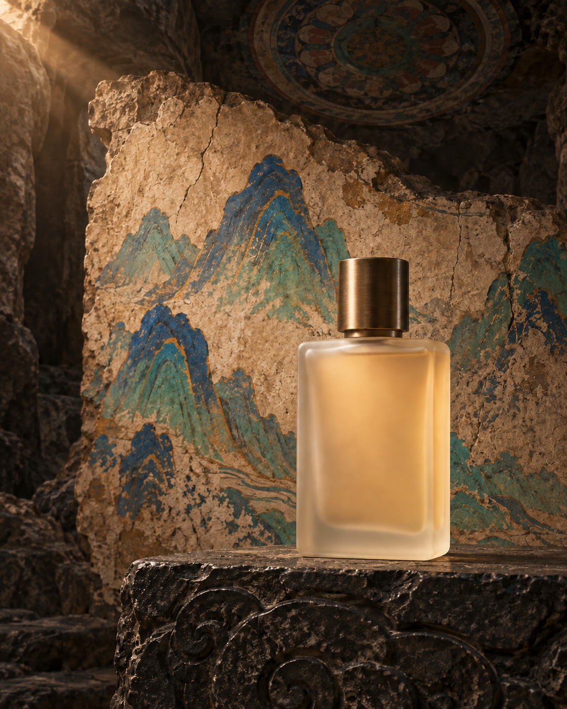
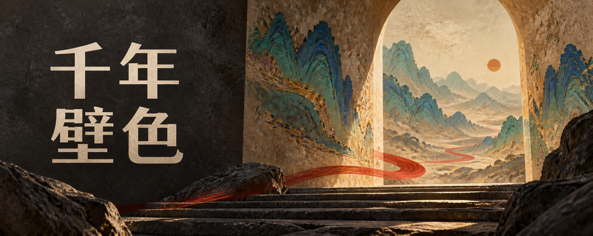
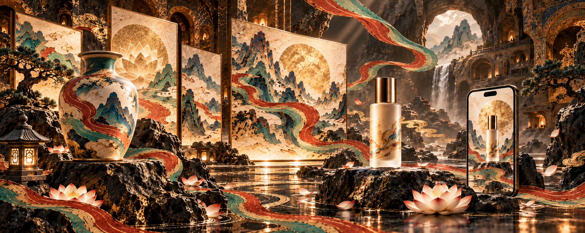

{kind=link}
{kind=link}
矿物配色
暗底、沙色壁面与红绿蓝飘带。色块为规则示意，并非从样张测量的颜色占比。
DUNHUANG AURA / 研究结论
整理敦煌配色、构图、文字与修改要求，供外部图像模型使用。
可借鉴美术规范和提示词组织；没有新增绘图能力，效果增益尚未验证。
矿物色 · 壁画肌理
现代产品 · 空间层次
结论归档 2026.09.14
版本 4b8ff65 · MIT

实际作品 / 2026.09.13
三次文生图、一次参考图编辑，每次保留首轮结果。图片均为本次实际生成，未裁切、未后期加字；产品是虚构设计。网页展示已生成文件，表单不实时出图。
上方茶品牌图满足左右视觉重点、中间通道和无字要求。左侧陶瓶体量较大，可能分散茶叶罐的注意力；需要商品导向更强时，可继续调整主次。
查看这张图的实际提示词B → D / 香氛广告与局部编辑
编辑目标：保留瓶子、台座、镜头和光线，只删除飘带并补全背景。


实际观察：红色飘带已移除，瓶子位置、外形和暖光大体保持；壁画颗粒、山形边缘和部分石材细节也被重绘。因此这次编辑有效，但不能称为像素级保真。
C / 中文标题封面
标题要求：准确四字，左侧两行呈现，无其他文案。

实际观察：“千年壁色”四字正确且只出现一次，留白与右侧场景分工清楚。但字体有明显衬线笔意，未完全遵循提示词中的“无衬线字体”。
这些图片展示了在本次外部图像工具下的实际表现。输出尺寸未达到提示词指定的目标像素，比例也只是接近值；未人工改尺寸。没有“同一模型有无 Skill”的对照，不能据此量化 Skill 本身的提升。
01 / 先看懂风格
“敦煌风”在现代设计中指从石窟艺术提取颜色、纹样与材料感。这个库选择其中一部分，用来搭建产品展示场景。
暗底、沙色壁面与红绿蓝飘带。色块为规则示意，并非从样张测量的颜色占比。
粗糙岩壁、斑驳画面，衬托陶瓷与玻璃；暖光和倒影加强产品的体积感。
前景是产品，中景是壁画面板，远处是洞窟或山体。飘带连接两侧视觉重点。

金光较强、莲花重复较多，体现了结果与“克制用金、减少装饰”规则间的距离。该图不能作为本次输入的输出或质量对照。
02 / 亲手试一试
改变用途、主体或装饰密度，观察提示词如何变化。本演示由本研究编写，依据上游规则拼装文字，不调用 AI，不生成图片。
可以直接编辑上方文字；更改左侧选项会重新展开。复制或下载后，交给支持生成 / 编辑图片的工具使用。
03 / 它实际做了什么
确定比例、产品、用途，以及是否需要文字。
Skill：任务说明加入构图、配色和限制；Python 脚本检查词项是否齐全。
Skill + 关键词检查由宿主接入的图像模型执行。仓库未提供模型或服务。
外部图像工具检查多余文字、物体变形、构图与光线；有问题再局部修正。
人工 / 具备视觉能力的智能体自带脚本只读取提示词文本。它不查看图片，也不验证中文是否生成正确、产品是否变形或图片是否美观。
04 / 值不值得使用
适合不熟悉绘图提示词的人，以及需要反复制作同风格封面、品牌提案、产品氛围图的团队。复用规则可以减少需求遗漏，让修改要求更具体。
没有自研模型、训练程序或渲染算法。两项上游测试仅验证提示词检查器；没有同模型的有无 Skill 对照实验，无法量化质量或效率提升。
敦煌主题封面、产品氛围图或系列提案，可以借用其规则结构。真实商品保真、准确排版和交付审核需要额外工程实现；本研究的工具与海报不属于上游能力。
已总结并归档，暂不继续扩展。后续遇到特定风格任务时，参考它如何组织配色、构图、文字限制和修改保留项；不把它当作通用设计引擎或质量保证。是否更好看、更稳定、更省时间，仍需对照验证。
后续慢光、PaperRoute、OpenMAIC 三张新版海报主要来自独立产品理解与图像模型创作，未严格沿用此 Skill，不能作为其有效证据。查看各轮制作方式与归因说明。
05 / 证据与来源
已阅读上游核心说明、检查脚本和参考文档，查看原始样张，运行自带两项测试并通过。本次新增三张实际生成图片与一次参考图编辑，逐张记录结果；没有进行多模型或批量效果评测。
敦煌石窟艺术跨越多个时代，本库的黑金洞窟与产品舞台是现代演绎。默认排除佛像、菩萨和飞天人物，不代表敦煌艺术的全部面貌。